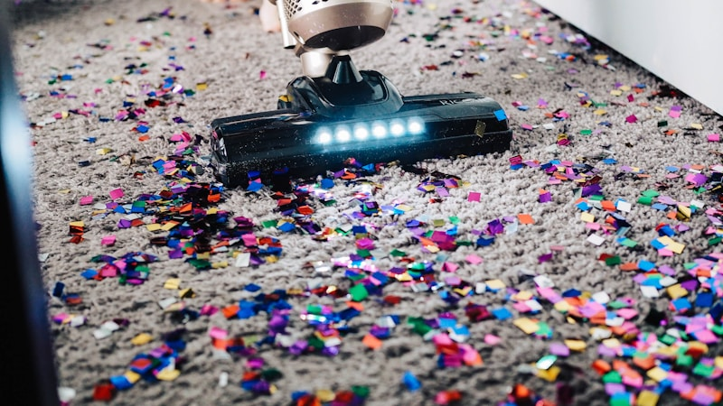

콩고 탄탈럼 광산 붕괴, 200명 사망 공급망 비상

전 세계 탄탈럼 생산량의 약 15%를 공급하는 콩고민주공화국(DRC) 루바야 광산에서 대규모 붕괴 사고가 발생해 최소 200명이 사망한 것으로 확인됐다. 이번 참사는 글로벌 탄탈럼 공급망에 즉각적인 충격을 주며, 희귀금속 수급 불안과 가격 상승 압력을 동시에 야기하고 있다.
루바야 광산은 DRC 동부 남키부주에 위치한 세계 최대급 탄탈럼 산지 중 하나다. 아르탄(Artisanal Mining·소규모 수공업 채굴) 방식으로 운영되는 이 광산에는 수천 명의 현지 노동자들이 열악한 안전 시설 속에서 일하고 있었다. 이번 붕괴는 집중 호우로 인한 갱도 내 토사 붕괴가 원인으로 추정된다.
탄탈럼은 커패시터(축전기) 소재로 스마트폰 한 대에 약 40mg, 노트북에는 약 250mg이 사용된다. 전 세계적으로 연간 약 2,000톤이 소비되는데, 이 중 상당 부분이 DRC와 르완다 등 중앙아프리카산에 의존한다. 루바야 광산의 조업 차질은 즉시 글로벌 공급량 감소로 이어질 수밖에 없는 구조다.
사고 직후 런던금속거래소(LME) 및 주요 브로커 호가 기준 탄탈럼 가격은 kg당 약 130~150달러 수준에서 거래되고 있었으나, 사고 소식이 전해지자 단기 급등 조짐이 나타났다. 일부 트레이더들은 단기 10~20% 가격 상승 가능성을 언급하고 있으며, 선물 포지션(미래 가격에 대한 투자 계약)도 빠르게 재조정되는 중이다.
미국의 북한·중국·러시아산 탄탈럼 수입 금지 조치가 확정된 시점과 이번 광산 붕괴 사고가 맞물리면서, 서방 세계의 탄탈럼 조달 경로는 더욱 좁아지게 됐다. 호주, 캐나다, 브라질 등 대체 공급처 개발이 시급해진 가운데, 기존 재고 보유량과 대체 소재 개발 수준이 각국 산업계의 대응 능력을 결정할 것으로 보인다.
국내 전자·반도체 업계는 탄탈럼 재고를 통상 3~6개월분 수준으로 유지하고 있는 것으로 알려졌다. 단기적으로는 수급에 큰 문제가 없겠지만, 공급 차질이 장기화될 경우 스마트폰과 반도체용 커패시터 생산에 차질이 빚어질 가능성을 배제할 수 없다. 삼성전기, 삼성전자, SK하이닉스 등 주요 수요 기업들의 재고 모니터링이 강화될 전망이다.
한 공급망 전문가는 '이번 사고는 단일 광산에 대한 과도한 의존이 얼마나 위험한지를 다시 한번 보여준다'며 '기업들은 탄탈럼 재활용 기술 투자와 함께 복수의 공급처를 확보하는 공급망 다각화 전략을 서둘러야 한다'고 강조했다. 재활용 탄탈럼은 현재 전체 소비량의 약 20~25% 수준으로 추정된다.
DRC는 탄탈럼 외에도 코발트, 콜탄, 금 등 다양한 희귀금속의 세계 최대 산지다. 그러나 정치적 불안정, 무장 단체의 광산 장악, 열악한 노동 환경 등 구조적 문제로 인해 공급 안정성이 항상 불안한 상태다. 국제 사회는 분쟁 광물 거래를 제한하는 규정(EU 분쟁 광물 규정 등)을 강화하고 있으나 현지 상황 개선은 더딘 실정이다.
탄탈럼의 주요 대체재로는 니오븀(Niobium)과 세라믹 커패시터 소재가 거론된다. 그러나 성능과 소형화 면에서 탄탈럼 커패시터를 완전히 대체하기는 어렵다는 것이 업계의 중론이다. 특히 고신뢰성이 요구되는 군사·의료·항공우주 분야에서는 당분간 탄탈럼 의존도가 유지될 수밖에 없다.
이번 사고를 계기로 아동 노동과 인권 침해 문제를 안고 있는 DRC 탄탈럼 채굴 현장에 대한 국제 사회의 압력이 더욱 높아질 것으로 예상된다. 애플, 인텔, 삼성 등 글로벌 전자 기업들은 분쟁 광물 사용 금지 정책을 공표하고 있으나, 복잡한 공급망 구조 속에서 원산지를 완전히 통제하기는 어려운 것이 현실이다.
투자 측면에서 이번 사고는 탄탈럼 재활용 기술과 대체 광산 개발 기업에 대한 투자 관심을 높이는 촉매제가 될 수 있다. 국내에서는 레이크머티리얼즈를 비롯한 희귀금속 관련 기업들의 주가가 수혜를 받고 있으며, 중장기적으로는 희귀금속 공급망 안정화를 위한 자원 외교와 기술 투자가 더욱 중요해질 전망이다.